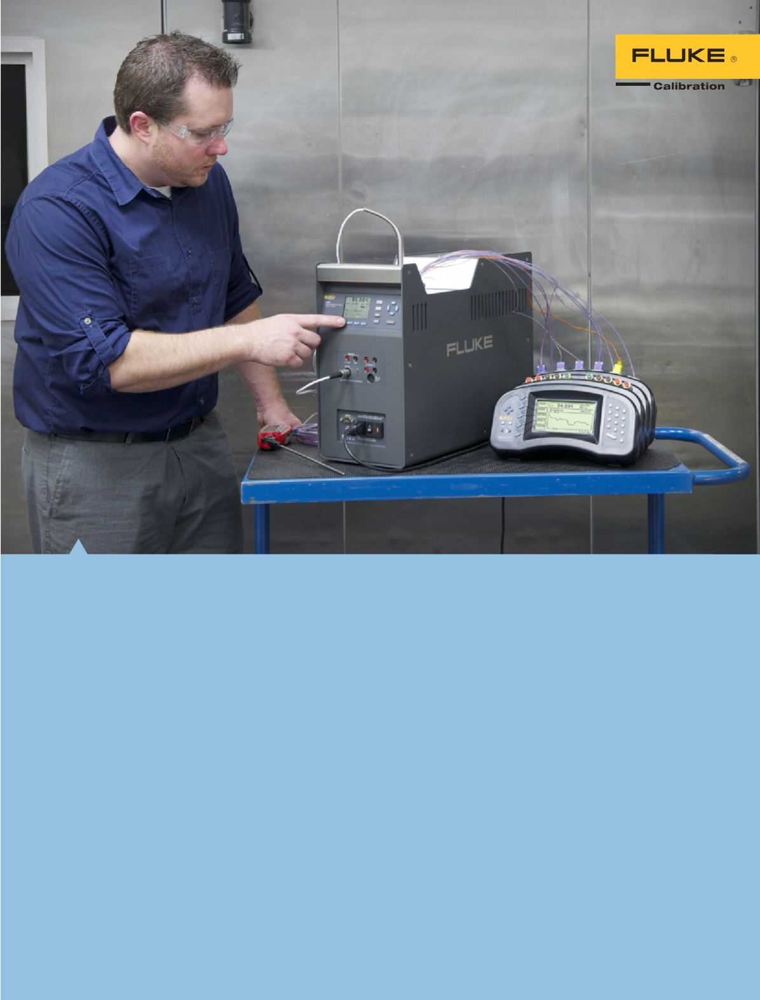

Temperaturkalibrierung
Unter Temperaturkalibrierung versteht man
die Kalibrierung eines Geräts, das in einem
Temperaturmesssystem verwendet wird. Für
gewöhnlich handelt es sich dabei um den
Temperatursensor selbst; das ist in der Regel
ein Platinumwiderstandsthermometer (PRT oder
PT-100), ein Thermistor oder ein Thermoelement.
Temperaturmessgeräte zeigen Temperaturen
an, indem sie die elektrischen Ausgangswerte
der Temperaturfühler messen und sie nach der
Internationalen Temperaturskala von 1990 (ITS-90) in
Temperaturwerte umwandeln.
Zum Kalibrieren werden Thermometer normalerweise
in eine stabile Temperaturumgebung (Temperaturquelle)
gebracht, und anschließend wird ihre Ausgabe mit
der eines kalibrierten „Referenzthermometers“ oder
„Standardthermometers“ verglichen. Das Angebot
von Fluke Calibration umfasst drei allgemeine
Temperaturquellenkategorien: industrielle
Temperaturquellen (Temperatur-Blockkalibratoren,
Mikro-Bäder usw.) für den Einsatz vor Ort,
Flüssigkeitsbäder und Thermoelementöfen für das
Labor und Fixpunktzellen für „primäre“ Kalibrierungen.
Außerdem bietet Fluke Calibration eine Vielzahl von
Referenzthermometern, einschließlich SPRTs, sowie
Thermometeranzeigegeräte an.
Außerdem liefert Fluke Calibration Labor-
und Feldlösungen zur Kalibrierung der in
Temperaturmesskreisen verwendeten Elektronik an.
11
Temperaturkalibrierung